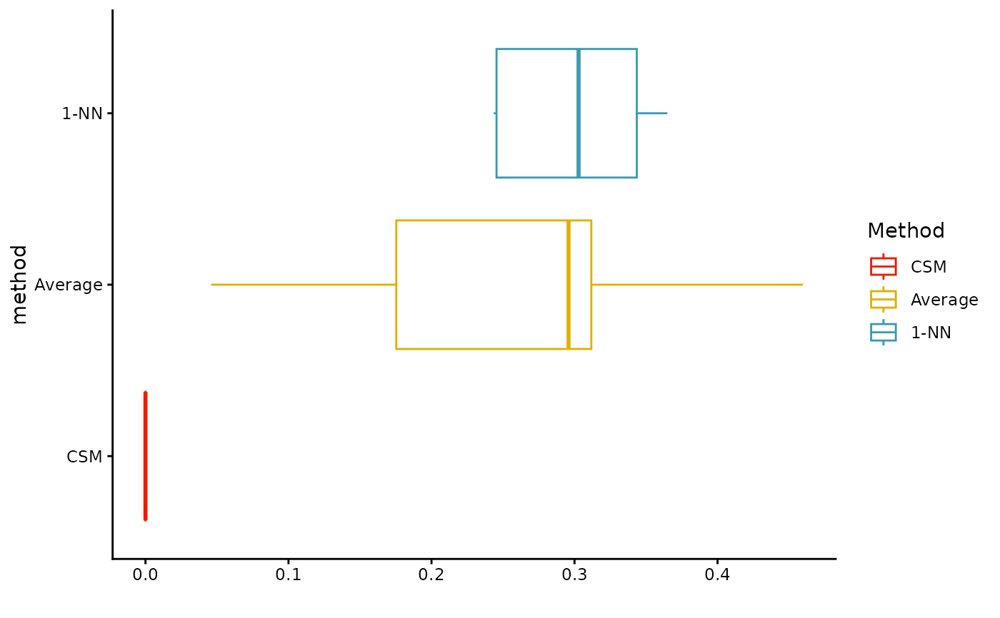

Calculate distances from treated units to their controls
distance_density_plot.RdLook at distribution of pairwise distances between treated unit and their synthetic control, average control, and 1-NN control.
Value
A ggplot object showing the density of distances. Also has two attributes: "table" with summary statistics of the distances, and "dist_table" with the full table of distances.
Examples
set.seed(4044440)
dat <- gen_one_toy(nt = 5)
mtch <- get_cal_matches(dat,
metric = "maximum",
scaling = c(1/0.2, 1/0.2),
caliper = 1,
rad_method = "adaptive",
est_method = "csm")
#> Warning: treatment variable not specified; defaulting to 'Z'
distance_density_plot(mtch)
